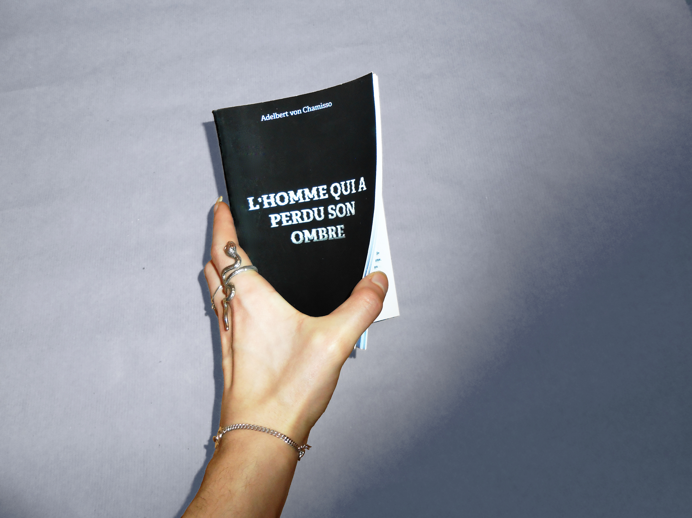
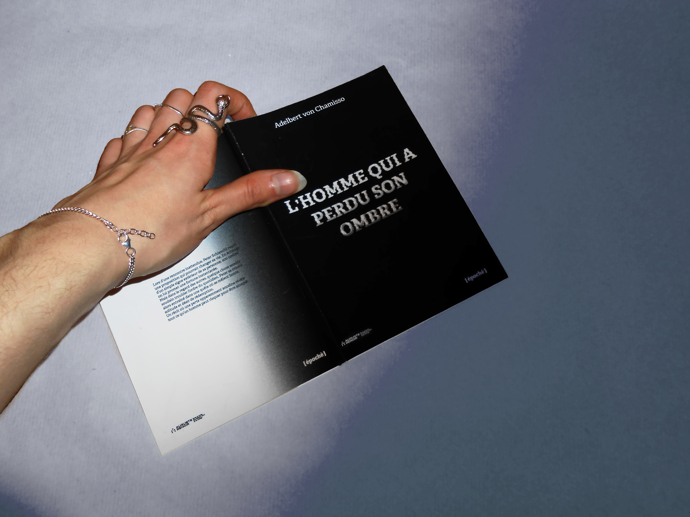
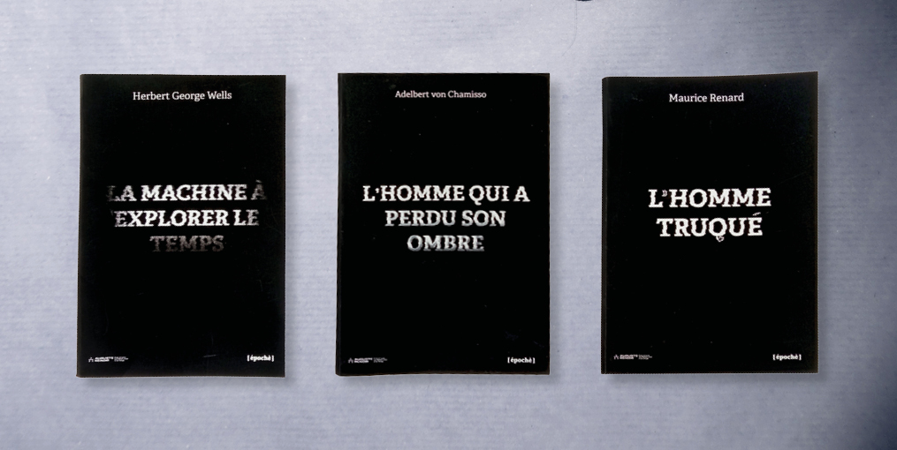
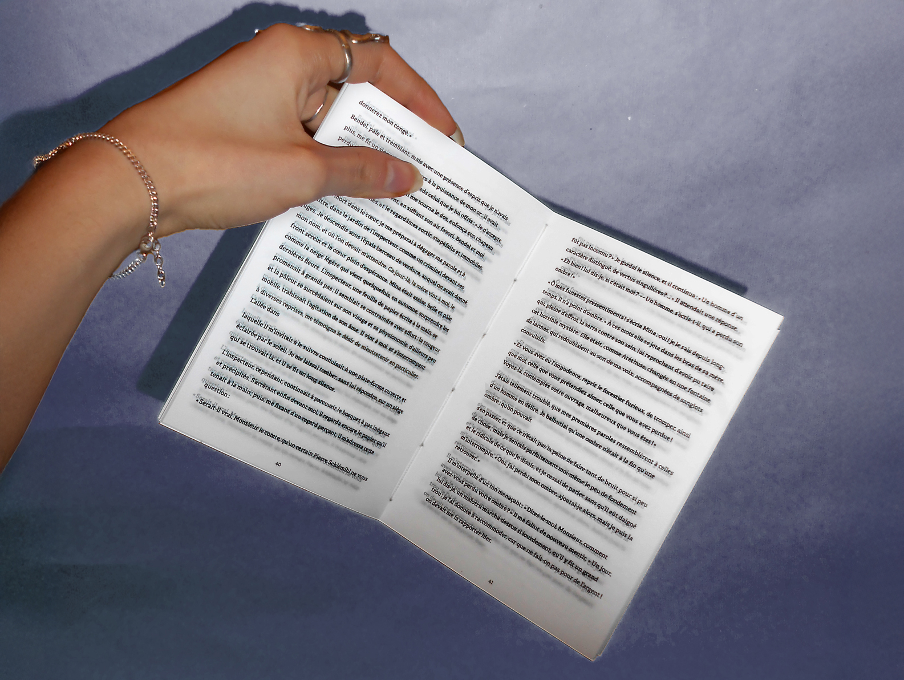
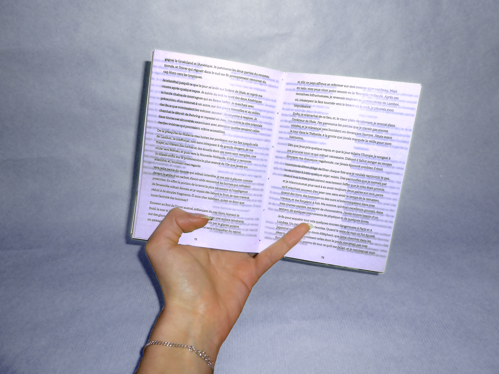
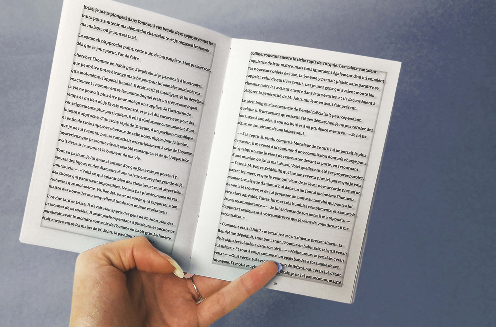
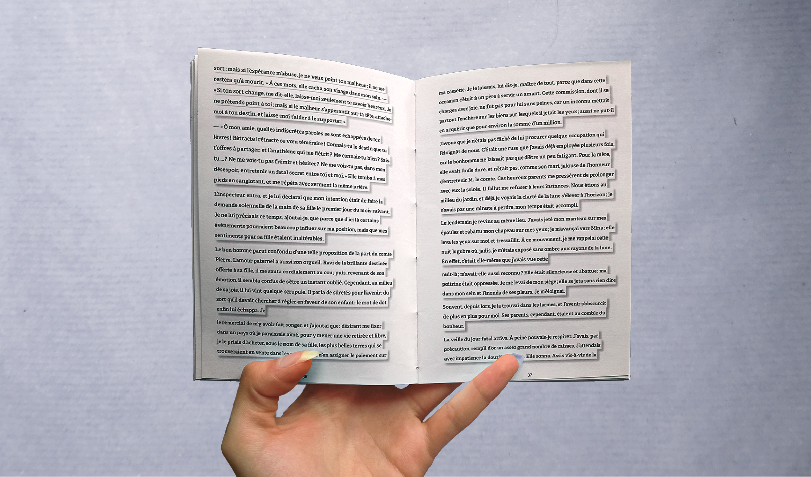

Ce projet consiste à créer une collection éditoriale sf où la typographie, pleinement expressive, devient un élément central du sens, à travers trois couvertures et la mise en page intérieure d’un des ouvrages.
L’Homme qui a perdu son ombre d’Adelbert von Chamisso met en scène un homme qui échange son ombre contre une richesse illimitée, avant d’être confronté au rejet social et à l’isolement. Pour se faire, la mise en page traduit la perte de l’ombre en faisant un moteur narratif, plus elle disparaît dans le récit, plus elle envahit visuellement le livre. L’ombre du texte reflète chaque état psychologique (enfermement, dissimulation, effondrement, solitude, mouvement) jouant sur la densité, le contraste et la lisibilité.
La collection repose sur des invariants graphiques assurant cohérence et identification : Un dégradé blanc/noir marque le passage du réel vers la science-fiction, le blanc incarne le quotidien, le noir le basculement et l’anomalie. Le glitch typographique agit comme trace visuelle d’une faille de cette anomalie. Le titre devient symptôme graphique du trouble.
Chaque ouvrage intègre dans son titre un indice visuel lié à son intrigue (L’Homme qui a perdu son ombre : présence diffuse et instable de l’ombre, L’Homme truqué : perturbations électriques évoquant une perception artificielle; La Machine à explorer le temps : titre absorbé par l’obscurité, suggérant disparition et menace.)






